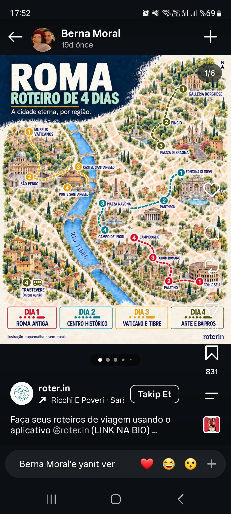

Kaynaklar:
roma_harita.jpg(roter.in, 4 günlük bölge haritası) ve italy.compass'in Day 1–4 görselleri. Fiyatlar görsellerden / yaklaşık değerlerdir, almadan önce resmî sitelerden kontrol edin.
| Gün | Tarih | Bölge | Bilet durumu |
|---|---|---|---|
| 1 | Cuma 20.11 | Merkez / meydanlar (haritada Dia 2) | Pantheon: bekleniyor |
| 2 | Cumartesi 21.11 | Antik Roma (haritada Dia 1) | Kolezyum: bekleniyor |
| 3 | Pazar 22.11 | Villa Borghese (haritada Dia 4'ün yeşil rotasının Borghese–Pincio–Spagna kısmı) | Galleria Borghese: karar verilecek, öneri: al |
| 4 | Pazartesi 23.11 | Vatikan (haritada Dia 3) | Vatikan Müzeleri: alındı ✅ |
Not: Haritadaki "Dia 4 – Arte e Bairros" gününün Trastevere ayağı programa girmedi (Borghese kısmını Pazar'a aldık). İstenirse bir akşam Trastevere'ye yemek için gidilebilir (aşağıda "Opsiyonel" bölümü).
Haritadaki sıra: 1 Trevi → 2 Pantheon → 3 Piazza Navona → 4 Campo de' Fiori. Cuma günü olduğu için meydanlar hafta sonuna göre daha boş olur.
Önerilen akış (görsellerdeki ipuçlarına göre uyarlandı): 1. Fontana di Trevi: sabah 07:30–08:30 arası git, en sakin saat. (Çeşmeye yaklaşma alanı için son dönemde küçük bir giriş ücreti uygulaması getirildi, gitmeden kontrol et.) 2. Pantheon (09:00 açılışı civarı, bilet ~€5): bilet açılınca slot al. 3. Campo de' Fiori: görseldeki ipucu "günün erken saatlerinde daha iyi" (sabah pazarı öğleden sonra kapanır). 4. Öğle yemeği. 5. Piazza Navona: görseldeki ipucu "geç öğleden sonra / akşamüstü".
Yemek (görselden): Armando al Pantheon (klasik Roma mutfağı, rezervasyon şart), Two Sizes (tiramisu).
Sanat eserleri: - Trevi Çeşmesi: Nicola Salvi'nin barok çeşmesi, ortada Okeanos/Neptün heykeli (Pietro Bracci). - Pantheon: Rafael'in mezarı, İtalya kralı II. Vittorio Emanuele ve I. Umberto'nun mezarları, oculus (tavan açıklığı), Melozzo da Forlì'ye atfedilen "Müjde" tablosu. - Piazza Navona: Bernini'nin Dört Nehir Çeşmesi, Moor Çeşmesi (Bernini), Borromini'nin Sant'Agnese in Agone kilisesi. - Campo de' Fiori: Giordano Bruno heykeli (Ettore Ferrari).
Haritada olmayan ama yakın (öneri, hepsi ücretsiz): - San Luigi dei Francesi (Navona'ya 5 dk): Caravaggio'nun Contarelli Şapeli. "Aziz Matta'nın Çağrılışı", "Aziz Matta'nın Şehit Edilişi", "Aziz Matta ve Melek". - Sant'Agostino: Caravaggio'nun "Loreto Madonnası"; Raphael'in Isaiah freski. - Santa Maria sopra Minerva (Pantheon'un yanı): Michelangelo'nun "Diriliş Mesih'i", Bernini'nin fil heykelli obelisk, Filippino Lippi freskleri. - Sant'Ignazio: Andrea Pozzo'nun trompe-l'œil tavan freski.
Haritadaki sıra: 1 Colosseo → 2 Palatino → 3 Foro Romano → 4 Campidoglio.
Önerilen akış: 1. Kolezyum (zaman slotlu giriş, sabah ilk slotu al). 2. Palatino Tepesi (kombine biletin içinde). 3. Roma Forumu (kombine biletin içinde). 4. Capitoline Tepesi / Campidoglio (ücretsiz meydan) ve istersen Piazza Venezia.
Bilet: Kolezyum + Forum + Palatino tek kombine bilet (görselde €18'den başlıyor, genelde 24 saat geçerli). Ayrı ayrı bilet almaya gerek yok. Sadece resmî siteden alın (ticketing.colosseo.it), yeniden satıcılar pahalı.
Yemek (görselden): Taverna dei Fori Imperiali (klasik Roma yemekleri), La Carbonara (Monti'de geleneksel makarna), Ai Tre Scalini (şarap barı, hafif atıştırmalık).
Sanat / yapılar: - Kolezyum: Flavian Amfitiyatrosu (MS 80), bilet turunda arena zemini ve hypogeum (yer altı) bölümü. - Konstantin Takı (Kolezyum'un yanı) ve Titus Takı: Titus Takı'ndaki Kudüs Tapınağı ganimeti (Menora) kabartması. - Roma Forumu: Septimius Severus Takı, Saturn Tapınağı sütunları, Curia, Vesta Tapınağı, Maxentius Bazilikası. - Palatino: Domus Augustana, Domus Livia'daki antik freskler, Farnese Bahçeleri. - Campidoglio: Michelangelo'nun tasarladığı meydan, ortada Marcus Aurelius heykelinin kopyası (orijinali müzede).
Haritada olmayan (görselden): - Piazza Venezia / Vittoriano (Altare della Patria): ücretsiz. Panoramik asansörle Roma manzarası ücretli.
Opsiyonel: Capitoline Müzeleri (~€15–16): Kapitol Dişi Kurdu, Ölen Galyalı, Marcus Aurelius'un orijinal atlı heykeli, Konstantin Kolossusu parçaları, Kapitol Venüsü, Spinario (dikenli çocuk), Bernini'nin Medusa'sı. Yorgunsan atla.
Haritadaki sıra: 1 Galleria Borghese → 2 Pincio → 3 Piazza di Spagna. Akış: Galleria Borghese (saatli giriş) → Villa Borghese parkı → Pincio Terası → Piazza del Popolo → İspanyol Merdivenleri. Pincio için akşamüstü gün batımı iyi.
Bilet: Galleria Borghese giriş ücreti ~€15 (görselde "from €15", rezervasyon ücreti dahil). Rezervasyon zorunlu, 2 saatlik slotlar var ve çok çabuk doluyor. Villa Borghese parkı ücretsiz.
Yemek (görselden): Casina Valadier (manzaralı, şık), Babette (Roma bistrosu), Canova Tadolini (sanat atmosferli kafe, Canova'nın eski atölyesi, heykeller arasında içiyorsun).
Galleria Borghese eserleri (müze küçük ama yoğun): - Bernini: Apollo ve Daphne, Proserpina'nın Kaçırılışı, David, Aeneas ve Anchises, Hakikat Açığa Çıkıyor. - Canova: Pauline Bonaparte, Venüs Victrix olarak. - Caravaggio: Meyve Sepetli Çocuk, Hasta Bakkhus, Madonna dei Palafrenieri, Aziz Jerome, Goliat'ın Kellesini Tutan David, Vaftizci Yahya. - Titian: Kutsal ve Dünyevi Aşk. - Raphael: Mesih'in Gömülüşü. - Correggio: Danae.
Haritada olmayan (görselden): - Piazza del Popolo: ücretsiz. Ramses II'ye ait Mısır obeliski, ikiz kiliseler. - Santa Maria del Popolo (ücretsiz, öneri): Caravaggio'nun Cerasi Şapeli ("Pavlus'un Hidayeti", "Petrus'un Çarmıha Gerilişi"), Raphael'in Chigi Şapeli. - Villa Borghese parkı: ayrı bir durak olarak haritada yok (ücretsiz). - İspanyol Merdivenleri üstünde Trinità dei Monti kilisesi; altta Bernini'ye atfedilen Barcaccia Çeşmesi.
Haritadaki sıra: 1 Vatikan Müzeleri → 2 San Pietro → 3 Castel Sant'Angelo → 4 Ponte Sant'Angelo.
⚠️ Pazartesi günleri Castel Sant'Angelo genelde kapalıdır. Dolayısıyla bilet almaya değmez; dışarıdan ve Ponte Sant'Angelo'dan görmek yeterli (köprü ücretsiz ve açık). Resmî sitesinden günü doğrulayın.
Önerilen akış: 1. Vatikan Müzeleri (biletiniz var): önce müze, sonunda Sistina, oradan bazilikaya geçiş mümkün (grup turlarında geçerli, bireysel için kontrol edin). 2. San Pietro Bazilikası (ücretsiz, güvenlik kuyruğu olabilir). Kubbeye çıkış ayrı ücretli. 3. Via della Conciliazione boyunca yürüyerek Castel Sant'Angelo'yu dışarıdan gör, Ponte Sant'Angelo'dan geç.
Kıyafet: omuz ve dizler kapalı olmalı (bazilika için).
Yemek (görselden): Ristorante Arlù (Vatikan yakını klasik Roma).
Vatikan Müzeleri eserleri: - Sistina Şapeli: Michelangelo'nun tavan freskleri ve Son Yargı. - Raphael Odaları: Atina Okulu. - Pio-Clementino Müzesi: Laokoon grubu, Belvedere Apollon'u, Belvedere Torso'su. - Haritalar Galerisi, Gobelen Galerisi, Bramante'nin çift sarmallı merdiveni. - Pinacoteca: Caravaggio'nun "İndirilme"si, Raphael'in "Transfigürasyon"u, Leonardo'nun "Aziz Jerome"u.
San Pietro Bazilikası eserleri: - Michelangelo'nun Pietà'sı. - Bernini'nin Baldacchino'su (bronz) ve Cathedra Petri. - Arnolfo di Cambio'ya atfedilen Aziz Petrus heykeli. - Michelangelo'nun tasarladığı kubbe. - Dışarıda: Bernini'nin sütunlu meydanı.
Haritada olmayan: yok, görseldeki beş yerin hepsi haritada var. Castel Sant'Angelo içinde (kapalı olduğu için sadece bilgi): Papa dairesi, terastan manzara, Hadrianus Mozolesi'nin kalıntıları.
| Görsel | Haritada olmayan |
|---|---|
| Day 1 – Ancient Rome | Piazza Venezia (ücretsiz) |
| Day 2 – Vatican & Centro | Hepsi haritada var (haritada ayrıca Trevi var, görselde yok) |
| Day 3 – Villas & Gardens | Piazza del Popolo, Villa Borghese parkı |
| Day 4 – Trastevere & River | Santa Maria in Trastevere, Tiber Adası, Janiculum (Gianicolo) Tepesi (haritada Trastevere ve Campo de' Fiori var) |
Opsiyonel (Trastevere gününden, programa girmedi): - Santa Maria in Trastevere: 12. yüzyıl mozaikleri, Pietro Cavallini'nin apsis mozaikleri. Ücretsiz. - Tiber Adası: Ücretsiz yürüyüş. - Janiculum Tepesi: Garibaldi anıtı, gün batımı manzarası. - Yemek: Da Enzo al 29, Nannarella, Otaleg! (dondurma). - Akşam yemeği için Trastevere'ye bir akşam gidilebilir.
| Yer | Öneri | Neden |
|---|---|---|
| Vatikan Müzeleri | ✅ Alındı | |
| Kolezyum + Forum + Palatino | Al (açılır açılmaz) | En popüler slotlar hızla tükenir; sabah ilk slot en sakini. |
| Galleria Borghese | Al, hemen | Rezervasyon zorunlu, 2 saatlik slot, kontenjan çok sınırlı, hafta sonu daha da hızlı doluyor. Pazar günü olduğu için daha da önemli. Koleksiyon (Bernini, Caravaggio) Roma'nın en iyilerinden. |
| Pantheon | Al (€5), açılınca | Sıra olabiliyor, slotlu bilet kuyruktan kurtarır. |
| Castel Sant'Angelo | Alma | Pazartesi (Vatikan günü) kapalı. Dışarıdan ve köprüden görmek yeterli. |
| Capitoline Müzeleri | İsteğe bağlı | Cumartesi yorgun değilsen. |
| San Pietro kubbesi | İsteğe bağlı | Yerinde alınır, merdiven yorucu. |
| San Pietro Bazilikası, Navona, Trevi, Spanish Steps, Campidoglio, kiliseler | Gerekmez | Ücretsiz. |
Sıra: önce Galleria Borghese (slot tükenmesin), sonra Kolezyum ve Pantheon açılınca.
Nerede, hangi eser incelenecek (günlere göre). 🔸 = görsellerde yok, benim önerim.
| Yer | Eserler / ne bakılacak |
|---|---|
| Pantheon | Kubbe ve oculus (Roma betonunun en büyük kubbesi, MS 2. yy), Rafael'in mezarı, Melozzo da Forlì'ye atfedilen "Müjde" |
| Piazza Navona | Bernini'nin Dört Nehir Çeşmesi (obeliskin altında Nil, Ganj, Tuna, Rio de la Plata), Borromini'nin Sant'Agnese in Agone cephesi. Bernini ile Borromini'nin rekabeti burada yan yana görülür |
| 🔸 San Luigi dei Francesi | Caravaggio, Contarelli Şapeli (sol şapel): Matta'nın Çağrılışı, Matta'nın Şehit Edilişi, Matta ve Melek. Işık-gölge (tenebrizm) için en iyi yer |
| 🔸 Sant'Agostino | Caravaggio, Loreto Madonnası (ayakları çıplak, kirli hacılar) |
| 🔸 Santa Maria sopra Minerva | Michelangelo, Diriliş Mesih'i; Bernini'nin fil + obelisk'i (önünde meydanda) |
| 🔸 Sant'Ignazio | Andrea Pozzo, tavan trompe-l'œil freski; tavanın "açılan kubbesi" aslında düz. Merkez zeminde işaretli noktadan bakılır |
| Trevi Çeşmesi | Nicola Salvi'nin barok çeşmesi, Okeanos heykeli (Pietro Bracci) |
| Campo de' Fiori | Giordano Bruno heykeli |
| Yer | Eserler / ne bakılacak |
|---|---|
| Kolezyum | Roma mühendisliği, üç katlı kemer ve sütun düzeni (Dor, İyon, Korint), hypogeum |
| Konstantin Takı (Kolezyum'un yanı) | Zafer takı; üzerindeki kabartmalar önceki imparatorlardan devşirilmiş (spolia) |
| Titus Takı (Forum) | Kudüs Tapınağı ganimeti, Menora kabartması |
| Roma Forumu | Septimius Severus Takı, Saturn Tapınağı, Curia, Vesta Tapınağı, Maxentius Bazilikası |
| Palatino | Domus Livia'da duvar freskleri, Domus Augustana |
| Campidoglio | Michelangelo'nun tasarladığı meydan (zemin deseni ve cepheler) |
| 🔸 Capitoline Müzeleri (isteğe bağlı) | Kapitol Dişi Kurdu, Ölen Galyalı, Marcus Aurelius'un orijinal atlı heykeli, Konstantin Kolossusu parçaları (avluda), Bernini'nin Medusa'sı, Caravaggio "Falcı Kadın" ve "Vaftizci Yahya" |
| 🔸 San Pietro in Vincoli (Kolezyum'a yürüyüş mesafesi, ücretsiz) | Michelangelo, Musa (II. Julius'un mezarı) |
| Yer | Eserler / ne bakılacak |
|---|---|
| Galleria Borghese, zemin kat | Canova, Pauline Bonaparte (Venüs Victrix); Bernini: David, Apollo ve Daphne, Proserpina'nın Kaçırılışı, Aeneas ve Anchises, Hakikat Açığa Çıkıyor; Caravaggio odası: Meyve Sepetli Çocuk, Hasta Bakkhus, Madonna dei Palafrenieri, Aziz Jerome, Goliat'ın Kellesini Tutan David, Vaftizci Yahya |
| Galleria Borghese, üst kat (Pinacoteca) | Raphael, Mesih'in Gömülüşü; Titian, Kutsal ve Dünyevi Aşk; Correggio, Danae; Antonello da Messina |
| Piazza del Popolo | Ramses II obeliski, ikiz kiliseler |
| 🔸 Santa Maria del Popolo | Caravaggio, Cerasi Şapeli: Pavlus'un Hidayeti, Petrus'un Çarmıha Gerilişi; Raphael'in Chigi Şapeli |
| İspanyol Merdivenleri | Barcaccia Çeşmesi (Bernini, baba-oğul), Trinità dei Monti |
| 🔸 Santa Maria della Vittoria (isteğe bağlı, merkeze yakın) | Bernini, Aziz Teresa'nın Vecdi (Cornaro Şapeli) |
| Yer | Eserler / ne bakılacak |
|---|---|
| Pio-Clementino Müzesi | Laokoon grubu, Belvedere Apollon'u, Belvedere Torso'su |
| Haritalar ve Gobelen Galerileri | Tavan freskleri, Raphael atölyesi kartonlarından dokunmuş duvar halıları |
| Raphael Odaları | Stanza della Segnatura: Atina Okulu, Disputa. Ayrıca Heliodorus odası, Borgo Yangını |
| Sistina Şapeli | Michelangelo: tavan (Yaratılış, Adem'in Yaratılışı) ve altar duvarında Son Yargı. Yan duvarlar: Botticelli, Perugino, Ghirlandaio |
| Pinacoteca (ayrı kanat) | Raphael, Transfigürasyon; Caravaggio, İndirilme; Leonardo, Aziz Jerome (bitmemiş); Giotto, Stefaneschi Triptiği |
| San Pietro Bazilikası | Michelangelo, Pietà (girişte sağ şapel); Bernini, Baldacchino ve Cathedra Petri; Michelangelo kubbesi; Arnolfo di Cambio'ya atfedilen Aziz Petrus heykeli |
| Meydan | Bernini'nin sütunlu kolonadı |
| Ponte Sant'Angelo | Bernini atölyesinin melek heykelleri |
Bölüm numaraları kitabın İngilizce baskısındaki sıraya göredir. Türkçe baskıda başlıklar farklı çevrilmiş olabilir, kitabın içindekiler sayfasından kontrol edin. Her gün öncesi o günün bölümünü okuyun.
| Gün | Bölümler | Neden |
|---|---|---|
| Cuma (Pantheon, Navona, Caravaggio kiliseleri) | 19 (Vision and Visions, 17. yy. başı), 21 (Power and Glory I, Barok İtalya) | Caravaggio, Bernini, Borromini, Pozzo |
| Cumartesi (antik Roma) | 4 (Güzellik Diyarı) ve 5 (World Conquerors, Roma sanatı) | Roma mimarisi, kemer ve beton, portre heykeli, zafer takları. Pantheon ve Kolezyum'un kitaptaki yeri. Hellenistik heykel (Laokoon, Ölen Galyalı) için de bakılır |
| Cumartesi (🔸 Moses) | 15 (Harmony Attained) | Michelangelo ve II. Julius mezarı |
| Pazar (Borghese) | 19, 15 (Rafael), 16 (Light and Color: Titian) | Caravaggio, Bernini, Raphael, Titian |
| Pazartesi (Vatikan) | 13 (Tradition and Innovation I, 15. yy. İtalya), 15 (Harmony Attained: Leonardo, Rafael, Michelangelo, Bramante ve San Pietro), 18 (A Crisis of Art), 21 | Sistina yan duvarları (15. yy.), Raphael Odaları, Michelangelo, Son Yargı sonrası Maniyerizm, Bernini |
| Trastevere (isteğe bağlı) | 6 ve 8 (erken Hristiyan, Bizans ve ortaçağ mozaikleri) | Santa Maria in Trastevere apsis mozaikleri |
Okuma kısa sürecekse öncelik: 15 → 19 → 5.
Kitap Rönesans'la başlıyor, antik Roma yok. Sayfa numaraları kitabın basılı sayfa numaralarıdır (içindekiler sayfasına göre), PDF sayfa numarası değil.
| Bölüm | Sayfa | Roma ile bağlantısı |
|---|---|---|
| 2. Rönesans, özellikle "Rönesans Sanatı" ve "Rönesans'ın Sonu" (Yabancı İstilası, Machiavelli) | s. 72–108 (sanat: 91–102) | Papalık himayesi, Raphael, Michelangelo, Bramante; Vatikan günü öncesi |
| 3. İki Reformasyon: Reformasyon'un Kökenleri (Din Adamlarının İstismarları ve Endüljanslar, Luther) | s. 115–126 | Endüljans satışı San Pietro'nun yapımını finanse etmişti |
| 3. İki Reformasyon: Katolik Reformasyonu (Trento Konseyi, Cizvitler) ve "Barok Üslup" | s. 147–156 | Karşı-Reform sanatı: Barok, Bernini, Sant'Ignazio, Caravaggio kiliseleri |
| 7. Mutlakiyet Çağı: "Mimaride ve Sanatta Anıtsalcılık" | s. 284–301 | Barok mimari ve iktidar gösterisi (Navona, San Pietro meydanı) |
| 13. Napoleon ve Avrupa: Konkordato (Papalıkla Anlaşma) | s. 531–544 | Napoleon ve Papalık ilişkisi |
| 15. Restorasyon Avrupa'sı: Romantizm | s. 636–639 | Borghese ve 19. yy. kültürü için arka plan |
| 16. 1848 Devrimleri: İtalyan Devletlerinde Devrim ve Karşı Devrim | s. 670–683, 689–698 | 1849 Roma Cumhuriyeti, Garibaldi ve Janiculum |
| 17. Milli Birleşme Dönemi: İtalya'nın Siyasal Birleşmesi | s. 707–719 | 1870'de Roma'nın alınması, Vittoriano (Piazza Venezia), Janiculum'daki Garibaldi anıtı |
| 25. İktisadi Çöküntü ve Diktatörlük Avrupa'sı: İtalya'da Mussolini ve Faşizm | s. 1070–1080 | Piazza Venezia balkonu, Fori Imperiali yolu, 1929 Lateran Antlaşmaları (Vatikan Devleti) |
Günlere göre: - Cuma: Bölüm 3 (Katolik Reformasyonu, Barok) ve Bölüm 7 (Mimaride Anıtsalcılık). - Cumartesi: Bölüm 17 (Roma'nın alınışı, Vittoriano) ve Bölüm 25 (Mussolini). - Pazar: Bölüm 15, kısa. - Pazartesi: Bölüm 2 (Rönesans Sanatı), Bölüm 3 (Endüljanslar), Bölüm 13 (Konkordato).